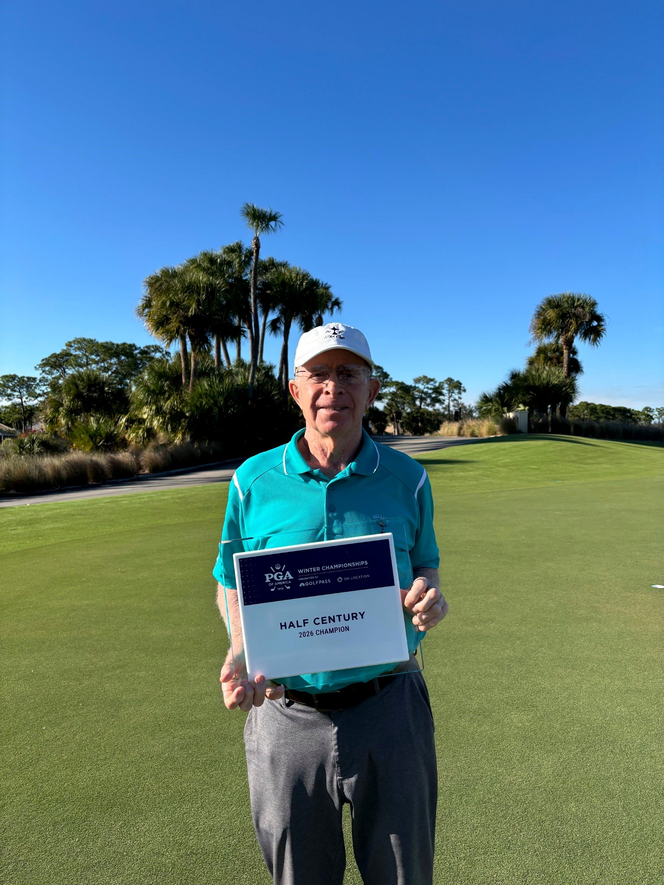
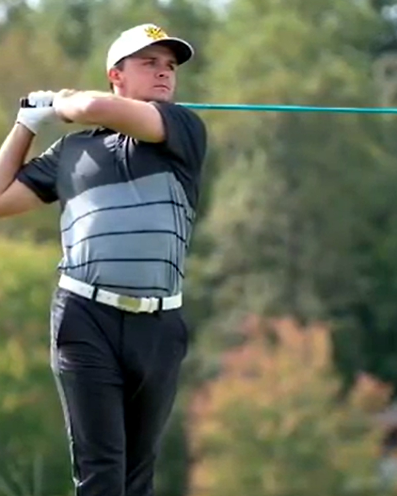

A national championship, decades of PGA excellence and a family tradition still growing today.

Born in 1947, Wendell became one of the nation’s leading junior golfers, played for the University of Florida, and helped the Gators win the 1968 NCAA Championship—the university’s first national team title in any sport.
His professional career includes the 1976 Atlanta Golf Open, Georgia Senior Open championships in 1999 and 2005, appearances in the 1999 and 2000 PGA Senior Championships and the 2005 U.S. Senior Open, plus Georgia PGA Teacher and Senior Player of the Year honors.
In 2026, at age 78, he won the Half Century Championship at 5-under 137, bettering his age by a combined 19 shots.
Ranked among the nation’s best junior golfers and established the competitive foundation for the career ahead.
Member of the University of Florida team that captured the program’s first NCAA golf title.
Assistant professional at Atlanta Country Club and head professional at Flat Creek and Braelinn.
Wendell develops a 50-acre public golf and practice facility serving Fayette County.
Two Georgia Senior Open titles, Senior Player of the Year and national teaching recognition.
Wins at age 78 with a two-round total of 137, nineteen shots better than his age.
Connor capped his junior career by winning the 2016 Optimist International Junior Golf Championship at PGA National after a six-hole playoff. He then became an immediate contributor at Kennesaw State, earning ASUN Co-Freshman of the Year and All-Freshman Team honors.
His collegiate career included individual victories at the 2016 Steelwood Intercollegiate and 2021 Raines Company Intercollegiate, ASUN Golfer of the Week honors, NCAA Regional and Championship appearances, and Srixon/Cleveland Golf All-America Scholar recognition.
At the 2021 Raines Company Intercollegiate, Connor posted rounds of 65-71-65 for a program-record 201 (-15). He also produced a 9-under 27 over nine holes during the Any Given Tuesday Intercollegiate.

Wins the 72-hole international junior championship at PGA National in a six-hole playoff.
Wins the Steelwood Intercollegiate and earns conference freshman honors.
Finishes 15-under with the lowest runner-up score in championship history at that time.
Recognized by the Golf Coaches Association of America and Srixon/Cleveland Golf.
Wins the Raines Company Intercollegiate at 15-under 201 and sets Kennesaw State records.
Brings tournament experience and modern communication to junior and adult instruction.